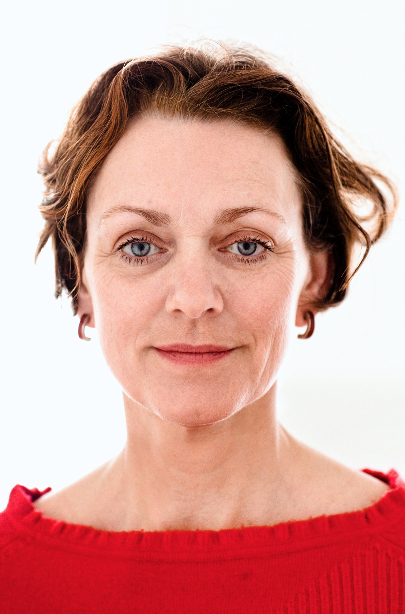

Über mich

Alexander-Technik-Lehrerin in Berlin und Mecklenburg-Vorpommern
Nach dem Studium und Diplom der Wirtschaftswissenschaften arbeitete ich einige Jahre in der Wirtschaft und im internationalen Kunsthandel mit zeitgenössischer Bildender Kunst. In diese Zeit fiel meine Heirat und die Geburt meiner beiden Kinder.
Der Umgang mit Bildender Kunst interessierte mich und ein Studium und Diplom der Kunstwissenschaften erweiterten mein Wissen. Etwa 20 Jahre lang war ich dann mit den verschiedenen Bereichen des Kunst- und Kulturmanagements beschäftigt. Zwölf Jahre führte ich in Berlin-Mitte meine eigene Galerie für zeitgenössische Bildende Kunst.
2002 kam ich mit der Alexander-Technik in Berührung. Die aktive Freizeitbeschäftigung mit Musik und Bewegung verstärkten meine Affinität zu ihr. Durch die Alexander-Technik lernte ich Stück für Stück, wie nachhaltig und weitgreifend Veränderung möglich ist und wie weit ich meine Wahrnehmungsfähigkeit entwickeln konnte.
Das Anwenden der Technik erleichterte zudem meinen Arbeitsalltag und auch mein Alltagsleben. Ich wurde weniger krank und war viel entspannter und erfolgreicher. Das wurde mit tiefer gehender Beschäftigung zunehmend interessant. Daher entschloss ich mich, die Ausbildung zur Lehrerin der F. M. Alexander-Technik zu absolvieren, die ein dreijähriges tägliches Studium umfasst.
Seit 2008 bin ich zertifizierte vollzeit Alexander-Lehrerin. Im selben Jahr haben wir in den ehemaligen Räumen der Galerie Blickensdorff das Zentrum für Alexander-Technik gegründet. Diese hellen und klaren Unterrichtsräumen sind inzwischen eine beliebte Plattform für Alexander-Unterricht, Alexander-Workshops und auch Aktivitäten anderer befreundeter Disziplinen. Seit Mai 2019 tragen die Räume den Namen „Jetzt und Hier“.
Da ich seit meiner Jugend reite, Pferdebesitzerin bin, und mit meinen Pferden lebe, spielt die Alexander-Technik für ReiterInnen eine besondere Rolle in meiner Arbeit.
In vielen internationalen Spezial- und Intensivkursen habe ich mein Alexander-Wissen vertieft und meine Fertigkeiten weiter entwickelt. Auch die Vipassana-Meditation, das Centered Riding, das energetische Reiten, und die akademische Reitkunst begleiten meine Arbeit.
Seit 2015 kooperiere ich mit der „Bildungswerkstatt Pflege“ und arbeite regelmäßig als Dozentin an der Landesakademie für die Öffentliche Verwaltung in Brandenburg und anderen Institutionen und Einrichtungen.
Seit Juli 2019 lebe und arbeite ich mit meinen Pferden in Mecklenburg-Vorpommern, in dem kleinen, aktiven Dorf Hohenbüssow.